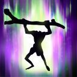
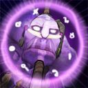
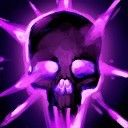
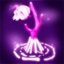
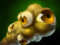
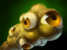
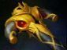
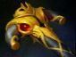

Dota 2 Builds
Witch Doctor
Вдали ковыляет невнятный силуэт — фигура со свесившимися конечностями, неловкой походкой, шныряющая по полю боя в поисках слабых мест в стане врага, там, где его способности нанесут больше всего вреда и пользы. Неясно, что могло сделать такое с живым существом, или же как оно могло таким уродиться, но никто не осмелится отвергать силы, содержащиеся в таком неопрятном каркасе. С громкими ударами посоха по земле колдун Witch Doctor по имени Жарвакко выдвигается в бой, пользуясь внушительным арсеналом разнообразных амулетов, проклятий, заговоров и заклинаний. В его теле — магические знания, добытые за несколько жизненных циклов на высокогорьях острова Арктуры, которые он теперь мастерски использует во вред противникам. Жарвакко — либо ваш лучший друг, либо злейший враг. За скрюченной, горбатой фигурой остаются исцеленные союзники и павшие страшной смертью враги.
Способности/Abulities
Paralyzing Cask
Бросает бочонок с парализующим порошком, который отскакивает от противников, оглушая их и нанося им увеличивающийся с каждым отскоком урон. Крипы получают только 200% от урона.

Способность: направленная на юнита
Действует на: врагов
Тип урона: магический
Дальность применения: 600
радиус отскока: 575
количество отскоков: 2/4/6/8 (Талант: 4/6/8/10)
Базовый урон: 40
увеличение урона по крипам: 200%
Доп. урон за отскок: 10/15/20/25
Длительность оглушения: 1
Жарвакко перемалывает кости павших союзников и противников, пополняя порошком свой арсенал чар и алхимии.Voodoo Restoration
 Герой направляет свои чары на лечение ближайших союзников, теряя ману каждую секунду действия этой способности.Способность: переключаемая/аура
Действует на:союзников
Радиус: 500/550/600/650
Лечение/урон в секунду: 10/22/34/46
Маны в секунду: 8/12/16/20 (Талант: 6/8/12/15)
Задержка ауры: 0,5
Макс. здоровья к лечению/урону в секунду: 0% (Талант: 1,5%)
Фокусы Жарвакко могут не только околдовать врагов, но и исцелить от различных болезней.Maledict
 Накладывает сглаз на всех вражеских героев в небольшой области, после чего они получают урон каждую секунду. Помимо этого, каждые 4 секунды им наносится периодический урон, зависящий от количества здоровья, потерянного с наложения сглаза.Способность: направленная на область
Действует на: врагов
Тип урона: магический
Дальность применения: 575
Радиус:180 (Талант: 255)
Урон в секунду: 12/18/24/30
Урон от количества потерянного здоровья: 16/24/32/40% (Талант: 41%/49%/57%/65%)
Интервал нанесения урона: 4
Длительность проклятья: 12
Некоторые заклятия вуду способны заставить врага жалеть о том, что он повстречался с ЖарваккоVoodoo Switcheroo
 Ненадолго превращает владельца в тотем от способности Death Ward, атакующий медленнее. Скрывает героя на время действия.Способность: ненаправленная
Действует на: себя/врагов
Замедление скорости атаки Death Ward: 30
Длительность: 3
Для активации способности требуется Aghanim's Shard
Death Ward
 призывает смертоносный тотем, атакующий вражеских героев.Способность: прерываемая/направленная на точку
Действует на: врагов
Дальность применения: 600
Максимальная длительность произнесения: 8
Бонус к точности Death Ward: 50%
Сборка/Builds
Начальный закуп:


 


Основные предметы:


 


ИСПОЛЬЗОВАТЬ ЭТОТ БИЛД